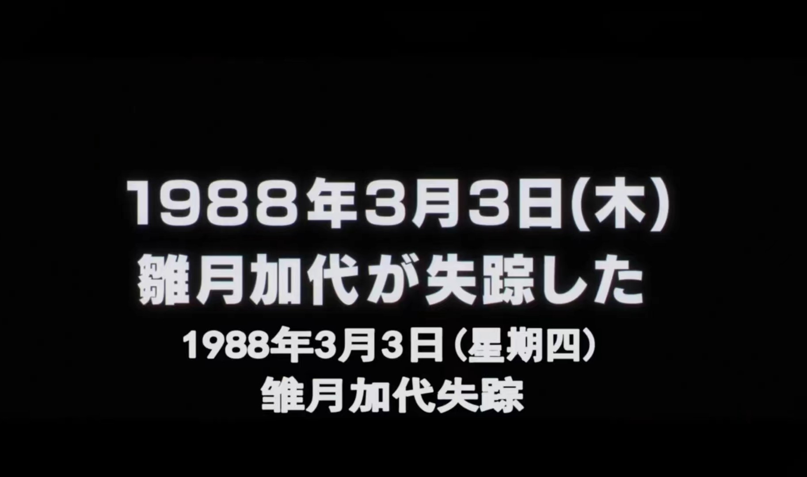
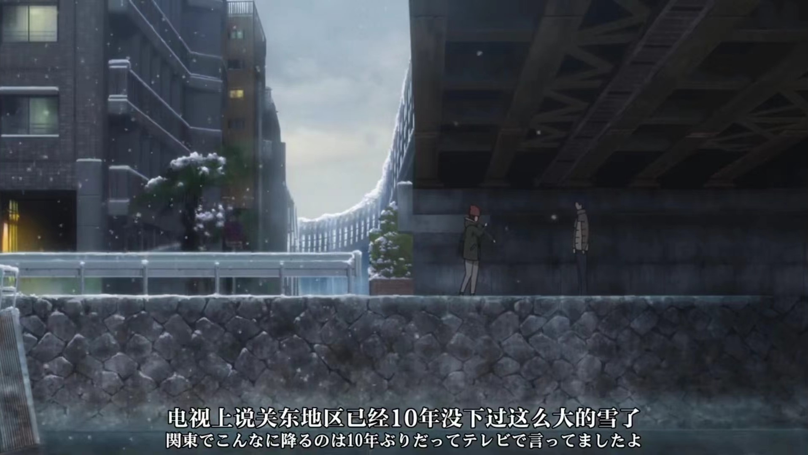
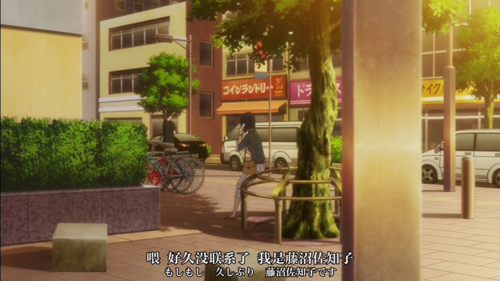

《只有我不在的城市》番评
written by SJTU-XHW
Reference: 维基百科词条、只有我不在的街道 (豆瓣)
声明：本文仅代表个人主观观点，侵删。
【重要】本文除去剧透警戒线下部分，其他内容不含具体故事情节。
在我看过的一百多来部的番剧中，有的能真正扣住我心弦，这大抵是少数；现在看来大多却是 “食之无味，弃之可惜”。初中时期的我曾经浅浅尝试过一部，但是由于开头比较惊悚的画面，还有网友打上的 NTR 标签，让我一直敬而远之、束之高阁。这部番的名字是《只有我不在的城市》(僕だけがいない街) 。
距离我第一次接触它已经过了好几年的时间，我也不是当年看番只看 HE 类型的观众了。于是我鼓起勇气，在这个国庆重温了这个多年前的老动画。
本以为我每天在睡前看一小会很快就能结束，可是万万没想到，我最终却熬了大夜将其一口气补完了。没错，在我个人看来，这部番绝对算得上是能排上名的一个相当优秀的作品。下面我将从我自己的视角来讲述这个作品带给我的小小震撼。
优秀的理由
注：本节几乎没有剧透内容。
这个作品是由同名漫画动画化而来，本人先观看了动画作品，而后再了解的漫画，所以这里的评价主要是围绕着动画的表现。
在我心目中，一个番剧想要做到不淹没在其他同质化的番剧之中、“泯然众人”，达到优秀的层面，有这几点要求：世界观的架构（设定）或真实或新颖，故事逻辑清晰合理，故事情节或流畅或跌宕，人物刻画不千篇一律。
《只有我不在的城市》在这些方面看来就已经超过了许多 “流水线生产” 的番：
- 设定上男主（悟）生活在普通城市，有 “重放” 的能力。这一点虽然和石头门的设定有些相似，但不至于落入俗套；并且在情节的加持下，真正观看的时候反而是一个比较吸引人的点；
- 故事的情节发展遵循唯一主线，紧密跟随男主视角；叙事节奏相当紧凑，但不慌乱，整体给人一种 “看完一集就忍不住继续下一集” 的想法；
- 故事对发生的事件和人物的描绘非常讲究主次和详略，对关键人物和群体的性格表现的比较丰满和立体，不会出现特意为某些角色补戏份、添加降智行为，或者套上标签和刻板印象的情况。
- 这部作品无论是动画还是漫画，其画风都比较戳我，颜值尚佳。
遗憾的是，最近这段时间我能找到的番剧中，达到甚至超越上面特征的可谓凤毛麟角。
最后，还是在我个人看来，这部作品并没有让我避之不及的 NTR 元素，纯爱战士也能够无伤通关，所以别因为这一点而停下你观赏的脚步。至于原因我会在后面分析，这毕竟是比较主观的方面，一千个人眼中有一千个哈姆雷特嘛。
🚧🚧🚧🚧🚧🚧🚧🚧🚧🚧🚧 ⚠⚠⚠ 剧透警告 ⚠⚠⚠ 🚧🚧🚧🚧🚧🚧🚧🚧🚧🚧🚧
故事的主线梳理
这里简短地回顾一下在动画中的叙事内容。
首先 29 岁的男主 藤沼悟 出生于 1977 年 3 月 2 日，刚登场时看起来发表过一些漫画作品，在披萨店 Oasi Pizza 打工。他的 “重放” 能力能够倒退时间（自身无法控制），回到事件（通常是坏事件）未发生的时候。
2006 年，悟 在某次在打工中途借助了能力救下了一位小学生，恰巧被披萨店的同事 片桐爱梨 看见。虽然受到了轻伤，但他的母亲 藤沼佐知子 因为担心他，而决定暂时搬过来照顾他。一日，打工回来的他目睹母亲死亡的现场，却被当作凶手通缉。情急之下 悟 无意间触发了 “重放” 而回到了 1988 年，也就是自己就读于市立美琴小学的时期。这是 悟 从最开始的时间线跳跃到第二条时间线。
为了解决发生在上个时间线上的小学生连续诱拐事件，同时想办法避免母亲的死亡（据主角推测，是因为目前猜出当年的真正凶手，才惨遭毒手），悟 想尽办法与 雛月加代（连环案中第一个遇害的学生）处好关系，却在生日（主角推算的案发时间）过后的第二天失踪——这仅仅将她的遇害时间延迟到了 3 月 3 日。到此，主角的所做的努力以失败告终。

在 悟 结束 “重放”，回到第二个时间线的 2006 年时，他仍然是警方通缉的对象。在与警察的周旋中，片桐爱梨 坚信 悟 不是弑母凶手，帮助 悟 躲避警察追捕。也正因如此，她被真正的犯人纵火困于居住地而昏迷，最后被 悟 和 高桥店长 救出。在 爱梨 住院期间，为了避开警方监视，她拜托母亲伪装，自己逃出意愿与 悟 会面，提供了真凶可能是 西园学（原名 八代学，1988 年是 悟 的小学班主任）的线索。紧接着 悟 继续 “重放”，回到 3 月 2 日 加代 未遇害的第三条时间线。
悟 在第三条时间线上成功阻止了 3 人被害，但真凶，就是当时的 八代学，设圈套利用被孤立的 柳原美里 骗 悟 并使其溺水成为植物人的状态。15 年后在医院苏醒，在取回记忆后，识破 西园学（以前的 八代学）的诡计，并用计让 西园学 坦白罪行。

故事的最后，西园学 被逮捕，而 悟 成为了人气漫画家，在桥下躲雪与 爱梨 相遇，全剧终。
番剧内容补充
事实上，这个动画刷完后，我还有一些地方不是很理解，或者说突兀，例如 八代学 的作案动机等。根据网友的解答，这和动画版删改的细节有关。
漫画中曾提到，八代学 的哥哥是一个三观扭曲的罪犯，在他的影响下，八代学 小时候就将朋友赠送的数只仓鼠尽数处决。不仅如此，漫画中还交代了他还是个非常缜密的罪犯，他只会找几个特质的人进行处决：“孤立”、“无助”、“不关心他人”、“孩童”，这些人在他的眼中仿佛是 攀于蛛丝上的犍陀多（用典 “蜘蛛之丝”）。他想要看到他所处决的对象对于生命执著的样子，而他能从中取得 “快乐”。而且他每处决一人之前，都会先做好缜密的计画，包含了如何取得被害人信任，以及怎样消除能追到他的证据，甚至是如何把这些罪行推到无关的人身上。
至于为什么 八代学 在 悟 破坏了他的计划后的 15 年内都没有犯罪，这在漫画中有所暗示，其实不是如此。他设计抹除了他入赘的议员女儿的男朋友，之后入赘到这个议员家里面改姓 “西园”，之后又设计做了岳父，取得了他的人脉后当上议员。接下来靠著议员的身份一直在观察 悟，希望他能够苏醒后亲手处决他。
感悟
这部带给我的不仅仅是绮丽的画风、引人入胜的紧凑剧情以外，我更喜欢的是作者笔下的人情世故。
悟 坐在 八代学 的车上说，“我想要弥补人心中的空缺”。在成长过程中，我们可能或多或少遇到这样那样的缺失——应该说却没说出口的话，应该保护却没有保护好的人，应该挺身而出却逃避的事……悟 心中的心结之一就是没能在那天夜晚叫上 加代 回家，这样很可能她就不会遇害了。
通过 “重放” 回到以前的 悟，卸下以往不关心他人的面具，29 岁的灵魂也勇于说出 “成为正义的伙伴” 的豪言壮语，勇敢地保护同伴，让追求正义地精神感染了身边地同伴，以实际行动弥补过去地遗憾和后悔。虽然最后 悟 在第三条时间线上牺牲了自己 18 年的青春，换来的是伙伴们的安然无恙，算是呼应了作品的标题 “只有我不在的城市”。
作者通过这种方式，向我们传递了 “悟以往之不谏，知来者之可追” 的人生态度。尽管我们多多少少心怀遗憾，心想 “如果当时这么做就好了”，但也希望我们像假面超人一样的坚韧不拔。我们无法回到过去，但我们拥有未来。愿我们不被胆怯束缚，敢闯敢拼，不留遗憾。
悟 的母亲 佐知子 也是一个让我印象深刻的人物。尽管警察没有采用 悟 的证言，她在看到 悟 坚定的眼神和解释后，选择相信 悟，并且在第一时间线的 18 年中都一直联系媒体同事追查真凶，即使案件已过追诉时效。

在三时间线的最后，悟 在成为植物人的 15 年间，母亲 佐知子 在商店打工照顾 悟，日复一日，她也坚信自己的儿子有一天终将会醒来。动画中，制作组给到的无声的镜头，例如母亲望向柜面上浓重的黑眼圈，独自坐在在公园长椅上，注视着前方熙攘的人群。很难想象，这 15 年里究竟是什么支撑着母亲、又是什么给予母亲继续的希望。想到这里，一种酸楚的感觉仿佛涌上心头。
在作者和制作组的笔下，佐知子 这位观察力敏锐、行动力强、坚强善良和极富舐犊之情的母亲形象跃然纸上。
作品的最后，加代 没有成为 悟 的妻子，这固然是一个遗憾，但这又未尝不是这个作品情节和设计的新颖之处呢？在漫画的外传中，加代 无比感激 悟 为她所做的一切，每天都去 悟 所在的医院协助 佐知子 帮 悟 进行肌肉按摩，一直与他谈学校的故事。直到上了国中以后，悟 更换了病房，善意的 佐知子 给 加代写了封信，一方面是感谢 加代 能给 佐知子 希望，另一方面则是希望加代能把握 “现在”，找到属于自己的另一半。
这样的设计的情节却更加真实，不落窠臼，也是让我眼前一亮的优点。就像网友所说，“悟选择奋不顾身地去拯救加代，不是出于对加代的爱慕，而是童年时对正义超人的憧憬，和由于过去无法挽救加代而一直深埋潜意识的挥之不去的愧疚”。所以说，战胜恶龙的勇者需要的或许不是那位被拯救的公主。这也是这部作品脱离千篇一律的 “包饺子” 结局的一个重要特征。
从这个角度来看，这个作品（叠甲：在我个人看来）是没有 NTR 的成分的，至少我的第一印象如此。并不是所有的结局都是理想直至虚无缥缈的 “大团圆”。
另外插一嘴，动画制作组真的细节，在 11 集的 OP 中移除了 悟 的身影，暗示着 悟 成功更改了时间线，这是只有 悟 不存在的城市。
最后，喜欢这部动画的观众可以找到对应的漫画（44 话 + 外传）进行进一步阅读，相信会有不一样的感受😉
 wechat
wechat alipay
alipay